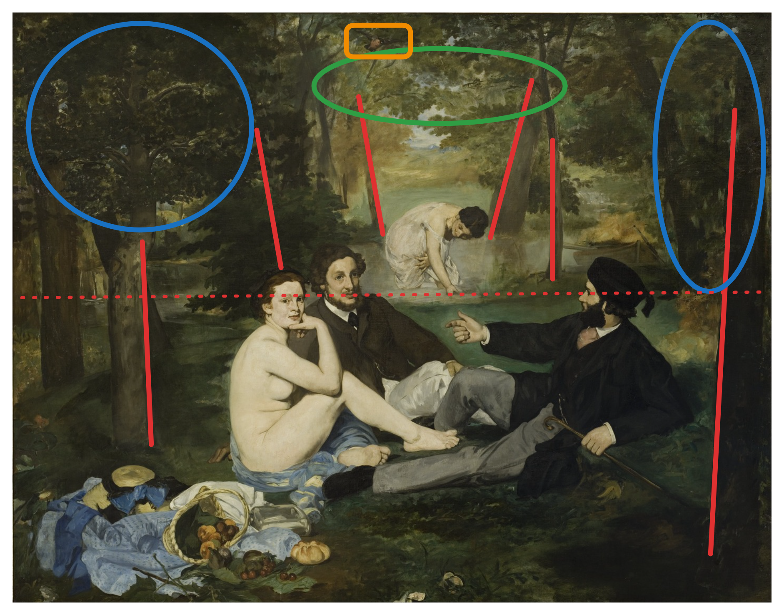

Plants in Manet's Le Déjeuner sur l'herbe
 Edouard Manet, Le Déjeuner sur l’herbe, 1862-63. Oil on canvas. Paris, Musée d’Orsay.
Edouard Manet, Le Déjeuner sur l’herbe, 1862-63. Oil on canvas. Paris, Musée d’Orsay.
 Berkan Ottlik, Sketch of Le Déjeuner sur l’herbe, 2024. Pencil on Paper. New York City.
Berkan Ottlik, Sketch of Le Déjeuner sur l’herbe, 2024. Pencil on Paper. New York City.
In class, we analyzed Manet’s Le Déjeuner sur l’herbe. We mainly focused on the figures, paying little attention to the plants. This essay focuses on the plants, mainly how they emphasize the juxtaposition of the woman in the front and the woman in the back of the painting.
 Edouard Manet, Le Déjeuner sur l’herbe, 1862-63. Oil on canvas. Paris, Musée d’Orsay.
The painting can be divided into two sections where the water meets the grass (dashed red line in the annotated painting).
Back
Consider the back section. In the very back, the forest transitions to an open grassy field with lots of light, the only entrance into the scene. The last pair of trees before the field are angled outwards, as if it welcomes visitors from the field (red lines in the back). There is another notable pair of trees right by the water, also slightly angled outwards (red lines in the middle). Both of these trees are young and small compared to the rest of the forest. The color of the leaves in the canopy in the back of the image is very bright (green oval).
The plants sets the stage for the woman in the back. She is dressed in a thin white dress and modestly looks down as she bathes. The young trees and bright leaves enhance the youth and innocence of the bather. The opening in the trees alludes to ancient public bath houses. This makes the woman appear innocent and acceptable, instead of a symbol of sex and desire.
Front
Now consider the front of the image. The main trees in the front are old, tall, and straight (red lines in the front). This blocks off visitors from the sides, with the only opening being the gap in the back. The leaves are much darker (blue oval). Additionally, there is a small still life of cherries and bread in the very front. However, it is knocked over and leaves serve to keep the cherries off the ground.
The plants in the front set a different stage for the woman. She is completely naked and shamelessly looks directly at us. With the dark trees blocking any visitors from the sides and one of the men blocking her from the gap in the trees in the back, she is exposed only to us and the men. Additionally, the still life contains cherries, symbols of sexuality and joy. It is also knocked over and chaotic. This makes the woman appear as a scandalous and unacceptable symbol of sex and desire, opposite to the woman in the back.
Other details
The brush strokes of the plants are much rougher than the figures. This directs our attention towards the figures. Additionally, there is a small bird at the top of the image (orange rectangle). Perhaps this bird is like us, a voyeur.